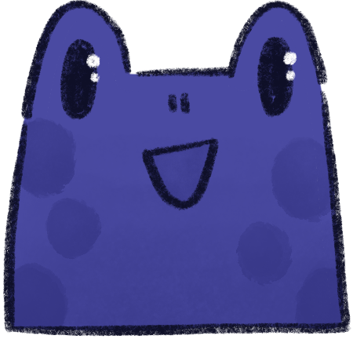

Ah, you are here for my ramblings. Hi!
Bugs to Chase— I mean fix
okay so listen. all of those bugs? not my fault. (actually very much my fault, I am the only one working on this...)
HOWEVER, if you want to participate in a way, there are options
easiest way to support me: come yap to me on Tumblr. Tell me what you like about it, where you see potential to make it better (just be kind okay?) or what future features you'd love to have. Or come tell me what stories you annotated, etc. I thrive on yappings and they provide me with motivation to sit down in my (limited) free time and keep work on projects like that.
if you have the finanicial means, you can drop a tip over at my Ko-Fi. But no worries if you can't / don't want to. This project currently doesn't need any money to run.
and last but not least, if you know how to code and want to do work on a feature independently that we can later merge into this project, hit me up and we can see what we can setup.
okay, gotta jump back in the coding pond, BYE
